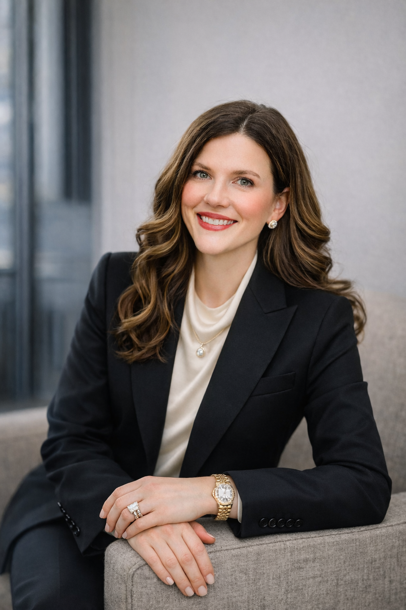

JCI Properties was founded on the belief that the best real estate outcomes come from strong relationships...
Jordan brings nearly 20 years of commercial real estate experience across Texas, with a track record defined by scale, strategy, and long-term relationships. Over the course of his career, he has been involved in more than 250 transactions, leasing over 3 million square feet and assisting in the purchase and sale of more than 12 million square feet of industrial and office product.
Jordan spent 10 years at HPI Real Estate Investments as a member of the Industrial team, where he oversaw 15+ million square feet of industrial and creative office assets. During this time, he also led HPI’s San Antonio office for three and a half years, managing tenant relationships, overseeing portfolio performance, and sourcing and acquiring new assets.
Following HPI, Jordan spent five and a half years at CBRE, advising both tenants and landlords across industrial and office sectors. He later went on to establish and lead Weitzman’s first Industrial Division across Texas, expanding the firm’s platform and industrial footprint statewide.
Jordan is currently enrolled in Harvard University’s Graduate Program in Real Estate Development, further deepening his expertise in investment strategy, development, and market fundamentals.
Email: jordan@jciprop.com

Claire oversees operations, branding, marketing strategy, and client communications at JCI Properties, playing a central role in how the firm functions day-to-day and how it presents itself in the market. She brings a thoughtful, relationship-driven approach to both internal operations and external engagement, ensuring clarity, consistency, and professionalism across every touchpoint of the business.
With over a decade of experience building and running her own companies, Claire has led operations, marketing, and client experience initiatives across industries including real estate, luxury services, and high-end brands. As a former business owner, she understands firsthand how to create systems that scale, manage teams and vendors, oversee budgets, and execute strategy with precision.
Claire’s background in real estate further strengthens her operational perspective. She brings a practical understanding of transactions, timelines, and client expectations, allowing her to bridge the gap between strategy and execution. At JCI Properties, she is deeply involved in streamlining internal processes, implementing technology and systems, supporting deal flow, and ensuring the firm’s marketing and communications reflect the quality of its work.
Known for her attention to detail, organizational leadership, and ability to manage complex moving parts, Claire plays a key role in keeping the business running efficiently while strengthening long-term client relationships. Her focus is on building a strong operational foundation that supports growth, elevates the client experience, and allows the firm to operate with intention and integrity.
Email: claire@jciprop.com Direct: